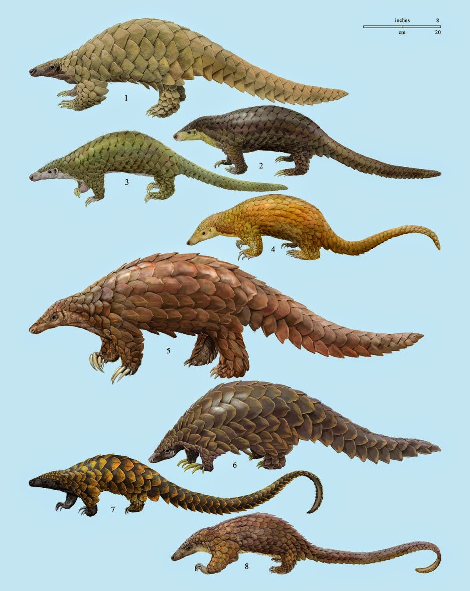

10 Fun Facts About the Pangolin!
- Pangolins are insectivores, feeding mainly on ants and termites.
- There are 8 species of pangolin - the Indian Pangolin (Manis crassicaudata), Philippine Pangolin (Manis culionensis), Giant Pangolin (Manis gigantea), Ground Pangolin (Manis temminckii), Tree Pangolin (Manis tricuspis), Long-tailed Pangolin (Manis tetradactyla), Chinese Pangolin (Manis pentadactyla) and Sunda Pangolin (Manis javanica).
- Due to loss of habitat, alongside predation, Chinese and Sunda pangolins are now on the endangered species list.
- Nocturnal and very secretive creatures, pangolins are still somewhat mysterious, with scientists knowing relatively little about their behavior in the wild.
- In China, pangolin meat is considered to be a delicacy.
- Pangolin scales are made of keratin, the same substance as horns, fingernails and hair and are used in both Chinese and African traditional medicine.
- Male Indian Pangolins can be up to 90% heavier than their female counterparts.
- Due to the lack of scales on their snout, eyes, ears and underbelly, pangolins curl into a ball for protection when threatened. They can also use the glands on their anus to produce a foul smelling acid in order to deter predators.
- Pangolins do not have teeth, nor can they chew, but feed by opening anthills/termite mounds with their claws and catch the insects with their sticky tongues, which can be up to 70cm long!
- As they have very long claws on their front paws, which are unsuitable for walking, pangolins often walk on their hind legs.
|

|